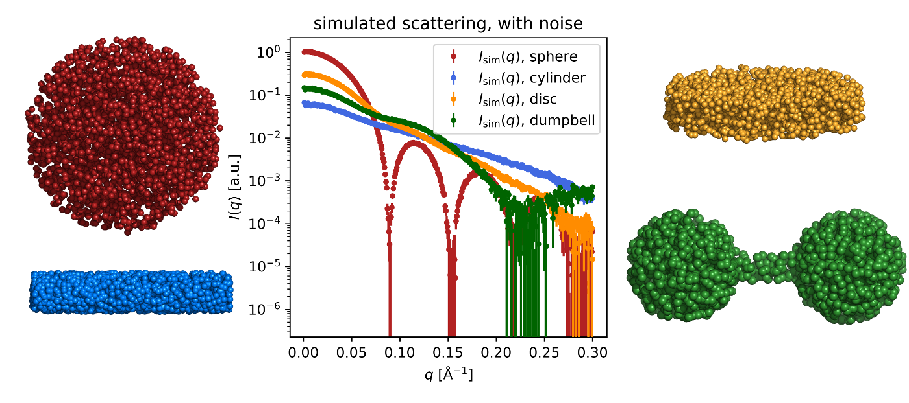
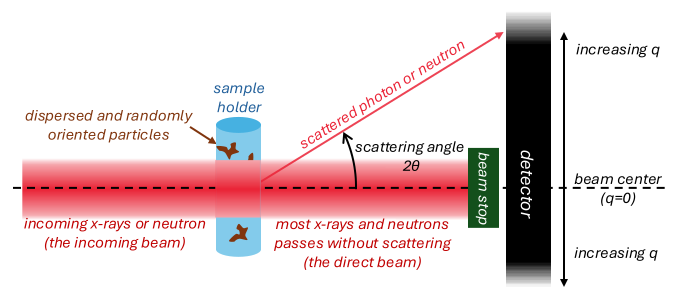

Home
Tutorial: particle shapes and SAS patterns
Contributors: Andreas Haahr Larsen, Martin Cramer Pedersen.

The scattering from various shapes (sphere, cylinder, disc and dumbbell) - simulated with Shape2SAS.
Before you start
- No installation or prior knowledge is required for this tutorial.
Learning outcomes
Learn how various shapes translate into SAS patterns.- Simulate SAS data of different shapes.
- Learn how particle size affects the scattering.
- Recognize shapes (e.g., spheres, cylinders, and discs) directly from SAXS data.
Introductory remarks
The basis for small-angle scattering is that nanoscale structures at can be investigated by sending a beam of x-rays or neutrons at the sample and measure how some of these are scattered by the sample. The measured scattering carry structural information, but one needs training to retrieve this information.
This tutorials deals with samples that has no preferred orientation, so the scattering is the same in all directions (isotropic). If the sample is oriented, then the scattering will be anisotropic.
An isotropic scattering image measured on a detector can be reduced to a single curve with scattering intensity as function of the $q$, where $q$ is roughly the scattering angle ($2\theta$), normalized by the wavelength ($\lambda$) of the incoming x-rays or neutrons:
$$
q=4\pi \sin(\theta)/\lambda
$$
So higher $q$ means that the x-ray or neutron was scattered further away from the beam. In this tutorial, we will simulate such curves and retrieve structural information from them.
Much structural information about particle size is found at (relative) low scattering angles, hence the names: small-angle x-ray scattering (SAXS) and small-angle neutron scattering (SANS).

A scattering experiment. The incoming beam of x-rays or neutrons hits the sample of nanoparticles dispersed in solvent. A small fraction of the x-rays or neutrons scatter and are measured by a detector. The direct beam is blocked by a beam stop to prevent damage of the detector.
Part I: Scattering from spheres of different sizes
Shape2SAS can generate shapes and calculate the scattering from these shapes. Use this program to calculate the scattering from spheres of different sizes:- If the Shape2SAS webpage is empty, click the three lines in the upper-left corner and press Calculations.
- Click the boxes Calculate scattering for Model 2/3/4.
- Select the subunit type (in this case use the default: spheres). Only use 1 subunit in each model for this exercise.
- The parameters a,b,c are the particle dimensions, but for spheres, you only need to change a, which is the radius. Choose different radii for each of the four spheres.
- Press "Submit" to see the scattering (and 3D illustrations and 2D projections) of each sphere.
- The pattern is a "scattering fingerprint" for spheres. It is the same for all the spheres, but shifted in along $q$, depending on size.
- There is an important inverse effect of particle size: larger radius shift the minima to smaller values of $q$, and vice versa.
Changing the range of $q$ can be obtained by changing distance between the sample and the detector or by changing the wavelength of the incoming wave.
Part II: Different shapes and their characteristic scattering patterns
Go to Shape2SAS, and try to generate the tutorial figure in the top of the page.- Select the subunit type. The dumbbell is generated by combining 3 subunits: 2 spheres and 1 cylinder, whereas the sphere, cylinder and disc consist of a single subunit each.
- The parameters a,b,c are the particle dimensions, and the meaning depends on the subunit type - hover the mouse over the boxes to get explanations.
- The parameters x_com,y_com,z_com translates the center-off-mass of a given subunit (necessary only for the dumbbell).
- Press "Submit" to see the scattering (and 3D illustrations) of each model.
- The scattering can optionally be plotted on a log-lin scale instead of a log-log scale (Plotting options). This was done in the figure above.
Part III: Ambiguity. Different shapes, but similar SAS patterns.
Some shapes can result in rather similar SAS patterns. Go to Shape2SAS, and simulate 2 objects- Model: cylinder with radius 10 Å (a=b=10) and length 100 Å (c=100).
- Model: an ellipsoid with axes 10, 10 and 70 (a=b=10 and c=70).
Therefore, visual inspection of data, and pattern recognition is only the first step in analysis of scattering data. Usually, more models are tested against the data, and any prior knowledge about the data (e.g. from microscopy or knowledge from the manufacturer) is considered in the analysis.
Challenges
- Have a look at these SAXS data. What shapes could have been measured in each experiment, as assessed by the shape of the data? What shapes can be excluded with certainty?
Perspectives
- Structural information can be derived quantitatively using mathematical models, see the Spheres tutorial.
- The sample holder and solvent also give rise to scattering, therefore a background is subtracted, see the Data Reduction tutorial.
- As some structural information can be retrieved by image recognition, attempts have been made in using machine learning to retrieve structural information from scattering data (Franke et al., 2018).
Help and feedback
Help us improve the tutorials by- Reporting issues and bugs via our GitHub page. This could be typos, dead links etc., but also insufficient information or unclear instructions.
- Suggesting new tutorials/additions/improvements in the SAStutorials forum.
- Posting or answering questions in the SAStutorials forum.